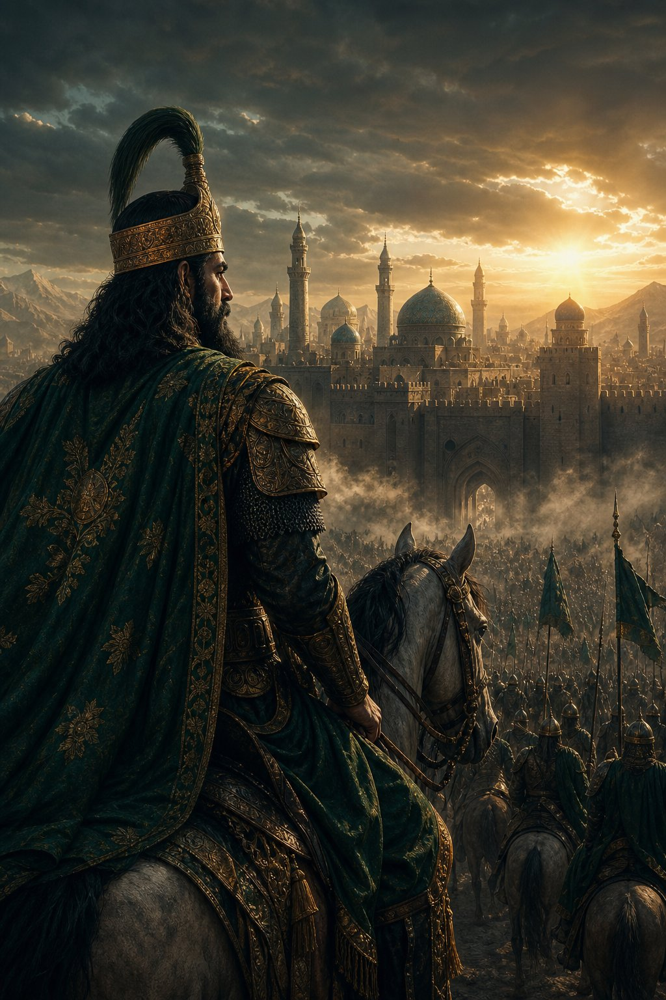

منجی — بازی حکومتسازی تاریخی
حکومت تاریخی خودت رو بساز؛
تصمیمهات مسیر تاریخ رو عوض میکنه
شهر میسازی، اقتصادت را برمیگردانی و ارتشت را به میدان میفرستی. «منجی»، بازی حکومتسازی تاریخی، در حال ساخت است — و این تازه آغاز راه است.

یک پروژه بزرگ، ساختهشده در ایرانزمین
ما باور داریم تاریخ این سرزمین، بزرگترین بستر داستان دنیاست؛ منجی را برای همین میسازیم.
پیشرفت کلی پروژه
مشاهده جزئیات